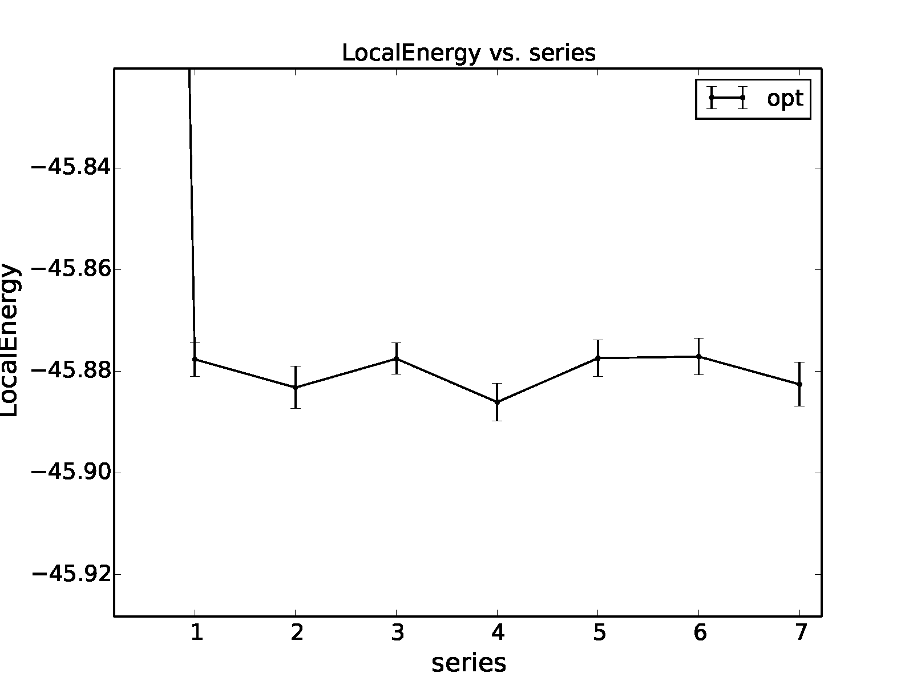

Using the qmca tool to obtain total energies and related quantities
The qmca tool is the primary means of analyzing scalar-valued data
generated by QMCPACK. Output files that contain scalar-valued data are
*.scalar.dat and *.dmc.dat (see Output Overview for a detailed description of these files).
Quantities that are available for analysis in *.scalar.dat files
include the local energy and its variance, kinetic energy, potential
energy and its components, acceptance ratio, and the average CPU time
spent per block, among others. The *.dmc.dat files provide
information regarding the DMC walker population in addition to the local
energy.
Basic capabilities of qmca include calculating mean values and
associated error bars, processing multiple files at once in batched
fashion, performing twist averaging, plotting mean values by series, and
plotting traces (per block or step) of the underlying data. These
capabilities are explained with accompanying examples in the following
subsections.
To use qmca, installations of Python and NumPy must be present on
the local machine. For graphical plotting, the matplotlib module must
also be available.
An overview of all supported input flags to qmca can be obtained by
typing qmca at the command line with no other inputs (also try
qmca -x for a short list of examples):
>qmca
no files provided, please see help info below
Usage: qmca [options] [file(s)]
Options:
--version show program's version number and exit
-v, --verbose Print detailed information (default=False).
-q QUANTITIES, --quantities=QUANTITIES
Quantity or list of quantities to analyze. See names
and abbreviations below (default=all).
-u UNITS, --units=UNITS
Desired energy units. Can be Ha (Hartree), Ry
(Rydberg), eV (electron volts), kJ_mol (k.
joule/mole), K (Kelvin), J (Joules) (default=Ha).
-e EQUILIBRATION, --equilibration=EQUILIBRATION
Equilibration length in blocks (default=auto).
-a, --average Average over files in each series (default=False).
-w WEIGHTS, --weights=WEIGHTS
List of weights for averaging (default=None).
-b, --reblock (pending) Use reblocking to calculate statistics
(default=False).
-p, --plot Plot quantities vs. series (default=False).
-t, --trace Plot a trace of quantities (default=False).
-h, --histogram (pending) Plot a histogram of quantities
(default=False).
-o, --overlay Overlay plots (default=False).
--legend=LEGEND Placement of legend. None for no legend, outside for
outside legend (default=upper right).
--noautocorr Do not calculate autocorrelation. Warning: error bars
are no longer valid! (default=False).
--noac Alias for --noautocorr (default=False).
--sac Show autocorrelation of sample data (default=False).
--sv Show variance of sample data (default=False).
-i, --image (pending) Save image files (default=False).
-r, --report (pending) Write a report (default=False).
-s, --show_options Print user provided options (default=False).
-x, --examples Print examples and exit (default=False).
--help Print help information and exit (default=False).
-d DESIRED_ERROR, --desired_error=DESIRED_ERROR
Show number of samples needed for desired error bar
(default=none).
-n PARTICLE_NUMBER, --enlarge_system=PARTICLE_NUMBER
Show number of samples needed to maintain error bar on
larger system: desired particle number first, current
particle number second (default=none)
Obtaining a statistically correct mean and error bar
A rough guess at the mean and error bar of the local energy can be
obtained in the following way with qmca:
>qmca -q e qmc.s000.scalar.dat
qmc series 0 LocalEnergy = -45.876150 +/- 0.017688
In this case the VMC energy of an 8-atom cell of diamond is estimated to
be \(-45.876(2)\) Hartrees (Ha). This rough guess should not be used
for production-level or publication-quality estimates.
To obtain production-level results, the underlying data should first be
inspected visually to ensure that all data included in the averaging can
be attributed to a distribution sharing the same mean. The first steps
of essentially any MC calculation (the “equilibration phase”) do not
belong to the equilibrium distribution and should be excluded from
estimates of the mean and its error bar.
We can plot a data trace (-t) of the local energy in the
following way:
>qmca -t -q e -e 0 qmc.s000.scalar.dat
The -e 0 part indicates that we do not want any data
to be initially excluded from the calculation of averages. The resulting
plot is shown in Fig. 4. The unphysical
equilibration period is visible on the left side of the plot.
Most of the data fluctuates around a well-defined mean (consistent
variations around a flat line). This property is important to verify
by plotting the trace for each QMC run.
If we exclude none of the equilibration data points, we get an
erroneous estimate of \(-45.870(2)\) Ha for the local energy:
>qmca -q e -e 0 qmc.s000.scalar.dat
qmc series 0 LocalEnergy = -45.870071 +/- 0.018072
The equilibration period is typically estimated by eye, though a few conservative values should be checked to ensure that the mean remains
unaffected. In this dataset, the equilibration appears to have been
reached after 100 or so samples. After excluding the first 100
VMC blocks from the analysis we get
>qmca -q e -e 100 qmc.s000.scalar.dat
qmc series 0 LocalEnergy = -45.877363 +/- 0.017432
This estimate (\(-45.877(2)\) Ha) differs significantly from the
\(-45.870(2)\) Ha figure obtained from the full set of data, but it
agrees with the rough estimate of \(-45.876(2)\) Ha obtained with
the abbreviated command (qmca -q e qmc.s000.scalar.dat). This is
because qmca makes a heuristic guess at the equilibration period and
got it reasonably correct in this case. In many cases, the heuristic
guess fails and should not be relied on for quality results.
We have so far obtained a statistically correct mean. To obtain a
statistically correct error bar, it is best to include \(\sim\)100
or more statistically independent samples. An estimate of the number of
independent samples can be obtained by considering the autocorrelation
time, which is essentially a measure of the number of samples that must
be traversed before an uncorrelated/independent sample is reached. We
can get an estimate of the autocorrelation time in the following way:
>qmca -q e -e 100 qmc.s000.scalar.dat --sac
qmc series 0 LocalEnergy = -45.877363 +/- 0.017432 4.8
The flag –sac stands for (s)how (a)uto(c)orrelation. In this case,
the autocorrelation estimate is \(4.8\approx 5\) samples. Since the
total run contained 800 samples and we have excluded 100 of them, we can
estimate the number of independent samples as \((800-100)/5=140\).
In this case, the error bar is expected to be estimated reasonably well.
Keep in mind that the error bar represents the expected range of the
mean with a certainty of only \(\sim 70\%\); i.e., it is a one sigma
error bar. The actual mean value will lie outside the range indicated by
the error bar in 1 out of every 3 runs, and in a set of 20 runs 1 value
can be expected to deviate from its estimate by twice the error bar.
Judging wavefunction optimization
Wavefunction optimization is a highly nonlinear and sometimes
sensitive process. As such, there is a risk that systematic
errors encountered at this stage of the QMC process can be propagated
into subsequent (expensive) DMC runs unless they are guarded against
with vigilance.
In this section we again consider an 8-atom cell of diamond but now in
the context of Jastrow optimization (one- and two-body terms). In
optimization runs it is often preferable to use a large number of
warmupsteps (\(\sim 100\)) so that equilibration bias does not
propagate into the optimization process. We can check that the added
warm-up has had its intended effect by again checking the local energy
trace:
The resulting plot can be found in Fig. 5. In
this case sufficient warmupsteps were used to exit the equilibration
period before samples were collected and we can proceed without using
the -e option with qmca.
After inspecting the trace, we should inspect the text output from
qmca, now including the total energy and its variance:
>qmca -q ev opt*scalar.dat
LocalEnergy Variance ratio
opt series 0 -44.823616 +/- 0.007430 7.054219 +/- 0.041998 0.1574
opt series 1 -45.877643 +/- 0.003329 1.095362 +/- 0.041154 0.0239
opt series 2 -45.883191 +/- 0.004149 1.077942 +/- 0.021555 0.0235
opt series 3 -45.877524 +/- 0.003094 1.074047 +/- 0.010491 0.0234
opt series 4 -45.886062 +/- 0.003750 1.061707 +/- 0.014459 0.0231
opt series 5 -45.877668 +/- 0.003475 1.091585 +/- 0.021637 0.0238
opt series 6 -45.877109 +/- 0.003586 1.069205 +/- 0.009387 0.0233
opt series 7 -45.882563 +/- 0.004324 1.058771 +/- 0.008651 0.0231
The flags -q ev requested the energy (e) and the variance
(v). For this combination of quantities, a third column (ratio)
is printed containing the ratio of the variance and the absolute value
of the local energy. The variance/energy ratio is an intensive quantity
and is useful to inspect regardless of the system under study.
Successful optimization of molecules and solids of any size generally
result in comparable values for the variance/energy ratio.
The first line of the output (series 0) corresponds to the local
energy and variance of the system without a Jastrow factor (all Jastrow
coefficients were initialized to zero in this case), reflecting the
quality of the orbitals alone. For pseudopotential systems, a
variance/energy ratio \(>0.20\) Ha generally indicates there is a
problem with the input orbitals that needs to be resolved before
performing wavefunction optimization.
The subsequent lines correspond to energies and variances of
intermediate parameterizations of the trial wavefunction during the
optimization process. The output line containing opt series 1, for
example, corresponds to the trial wavefunction parameterized during the
series 0 step (the parameters of this wavefunction would be found in
an output file matching *s000*opt.xml). The first thing to check
about the resulting optimization is again the variance/energy ratio. For
pseudopotential systems, a variance/energy ratio \(<0.03\) Ha is
consistent with a trial wavefunction of production quality, and values
of \(0.01\) Ha are rarely obtainable for standard Slater-Jastrow
wavefunctions. By this metric, all parameterizations obtained for
optimizations performed in series 0-6 are of comparable quality (note
that the quality of the wavefunction obtained during optimization series
7 is effectively unknown).
A good way to further discriminate among the parameterizations is to
plot the energy and variance as a function of series with qmca:
>qmca -p -q ev opt*scalar.dat
The -p option results in plots of means plus error bars
vs. series for all requested quantities.
The resulting plots for the local energy and variance are shown
in Fig. 6. In this case, the resulting energies
and variances are statistically indistinguishable for all optimization
cycles.
A good way to choose the optimal wavefunction for use in DMC is to
select the one with the lowest statistically significant energy within
the set of optimized wavefunctions with reasonable variance (e.g., among
those with a variance/energy ratio \(<0.03\) Ha). For
pseudopotential calculations, minimizing according to the total energy
is recommended to reduce locality errors in DMC.

Judging diffusion Monte Carlo runs
Judging the quality of the DMC projection process requires more
care than is needed in VMC. To reduce bias, a small
time step is required in the approximate projector but this also
leads to slow equilibration and long autocorrelation times.
Systematic errors in the projection process can also arise from
statistical fluctuations due to pseudopotentials or from trial
wavefunctions with larger-than-necessary variance.
To illustrate the problems that can arise with respect to slow
equilibration and long autocorrelation times, we consider the 8-atom
diamond system with VMC (\(200\) blocks of \(160\) steps)
followed by DMC (\(400\) blocks of \(5\) steps) with a small
time step (\(0.002\) Ha\(^{-1}\)). A good first step in
assessing the quality of any DMC run is to plot the trace of the local
energy:
>qmca -t -q e -e 0 *scalar*
The resulting trace plot is shown in Fig. 7. As
always, the DMC local energy decreases exponentially away from the VMC
value, but in this case it takes a long time to do so. At least half of
the DMC run is inefficiently consumed by equilibration. If we are not
careful to inspect and remove the transient, the estimated DMC energy
will be strongly biased by the transient as shown by the horizontal red
line (estimated mean) in the figure. The autocorrelation time is also
large (\(\sim 12\) blocks):
>qmca -q e -e 200 --sac *s001.scalar*
qmc series 1 LocalEnergy = -46.045720 +/- 0.004813 11.6
Of the included 200 blocks, fewer than 20 contribute to the estimated error
bar, indicating that we cannot trust the reported error bar.
This can also be demonstrated directly from the data. If we halve the number
of included samples to 100, we expect from Gaussian statistics
that the error bar will grow by a factor of \(\sqrt{2}\), but instead we
get
>qmca -q e -e 300 *s001.scalar*
qmc series 1 LocalEnergy = -46.048537 +/- 0.009280
which erroneously shows an estimated increase in the error bar by a
factor of about 2. Overall, this run is simply too short to gain
meaningful information.
Consider the case in which we are interested in the cohesive energy of
diamond, and, after having performed a time step study of the cohesive
energy, we have found that the energy difference between bulk diamond
and atomic carbon converges to our required accuracy with a larger time
step of \(0.01\) Ha\(^{-1}\). In a production setting, a small
cell could be used to determine the appropriate time step, while a
larger cell would subsequently be used to obtain a converged cohesive
energy, though for purposes of demonstration we still proceed here with
the 8-atom cell. The new time step of \(0.01\) Ha\(^{-1}\)
will result in a shorter autocorrelation time than the smaller time step
used previously, but we would like to shorten the equilibration time
further still. This can be achieved by using a larger time step (say
\(0.02\) Ha\(^{-1}\)) in a short intermediate DMC run used to
walk down the transient. The rapidly achieved equilibrium with the
\(0.02\) Ha\(^{-1}\) time step projector will be much nearer
to the \(0.01\) Ha\(^{-1}\) time step we seek than the
original VMC equilibrium, so we can expect a shortened secondary
equilibration time in the production \(0.01\) Ha\(^{-1}\) time
step run. Note that this procedure is fully general, even if having to
deal with an even shorter time step (e.g., \(0.002\)
Ha\(^{-1}\)) for a particular problem.
We now rerun the previous example but with an intermediate DMC
calculation using \(40\) blocks of \(5\) steps with a time step
of \(0.02\) Ha\(^{-1}\), followed by a production DMC
calculation using \(400\) blocks of \(10\) steps with a time
step of \(0.01\) Ha\(^{-1}\). We again plot the local energy
trace using qmca:
>qmca -t -q e -e 0 *scalar*
with the result shown in Fig. 8.
The projection transient has been effectively contained in the
short DMC run with a larger time step. As expected, the
production run contains only a short equilibration period.
Removing the first 20 blocks as a precaution, we obtain an estimate
of the total energy in VMC and DMC:
>qmca -q ev -e 20 --sac qmc.*.scalar.dat
LocalEnergy Variance ratio
qmc series 0 -45.881042 +/- 0.001283 1.0 1.076726 +/- 0.007013 1.0 0.0235
qmc series 1 -46.040814 +/- 0.005046 3.9 1.011303 +/- 0.016807 1.1 0.0220
qmc series 2 -46.032960 +/- 0.002077 5.2 1.014940 +/- 0.002547 1.0 0.0220
Notice that the variance/energy ratio in DMC (\(0.220\) Ha) is
similar to but slightly smaller than that obtained with VMC
(\(0.235\) Ha). If the DMC variance/energy ratio is ever
significantly larger than with VMC, this is cause to be concerned about
the correctness of the DMC run. Also notice the estimated
autocorrelation time (\(\sim 5\) blocks). This leaves us with an
estimated \(\sim 76\) independent samples, though we should recall
that the autocorrelation time is also a statistical estimate that can be
improved with more data. We can gain a better estimate of the
autocorrelation time by using the *.dmc.dat files, which contain
output data resolved per step rather than per block (there are
\(10\times\) more steps than blocks in this example case):
>qmca -q ev -e 200 --sac qmc.s002.dmc.dat
LocalEnergy Variance ratio
qmc series 2 -46.032909 +/- 0.002068 31.2 1.015781 +/- 0.002536 1.4 0.0221
This results in an estimated autocorrelation time of \(\sim 31\)
steps, or \(\sim 3\) blocks, indicating that we actually have
\(\sim 122\) independent samples, which should be sufficient to
obtain a trustworthy error bar. Our final DMC total energy is estimated
to be \(-46.0329(2)\) Ha.
Another simulation property that should be explicitly monitored
is the behavior of the DMC walker population. Data regarding the
walker population is contained in the *.dmc.dat files.
In Fig. 9 we show the trace of the DMC
walker population for the current run:
>qmca -t -q nw *dmc.dat
qmc series 1 NumOfWalkers = 2056.905405 +/- 8.775527
qmc series 2 NumOfWalkers = 2050.164160 +/- 4.954850
Following a DMC run, the walker population should be checked for two
qualities: (1) that the population is sufficiently large (a number
\(>2,000\) is generally sufficient to reduce population control
bias) and (2) that the population fluctuates benignly around its
intended target value. In this case the target walker count (provided in
the input file) was \(2,048\) and we can confirm from the plot that
the population is simply fluctuating around this value. Also, from the
text output we have a dynamic population estimate of 2,050(5) walkers.
Rapid population reductions or increases—population explosions—are
indicative of problems with a run. These issues sometimes result from
using a considerably poor wavefunction (see comments regarding
variance/energy ratio in the preceding subsections). QMCPACK has
internal guards in place that prevent the population from exceeding
certain maximum and minimum bounds, so in particularly faulty runs one
might see the population “stabilize” to a constant value much larger or
smaller than the target. In such cases the cause(s) for the divergent
population behavior needs to be investigated and resolved before
proceeding further.
Obtaining other quantities
A number of other scalar-valued quantities are available with qmca.
To obtain text output for all quantities available, simply exclude the
-q option used in previous examples. The following example shows
output for a DMC calculation of the 8-atom diamond system from the
scalar.dat file:
>qmca -e 20 qmc.s002.scalar.dat
qmc series 2
LocalEnergy = -46.0330 +/- 0.0021
Variance = 1.0149 +/- 0.0025
Kinetic = 33.851 +/- 0.019
LocalPotential = -79.884 +/- 0.020
ElecElec = -11.4483 +/- 0.0083
LocalECP = -22.615 +/- 0.029
NonLocalECP = 5.2815 +/- 0.0079
IonIon = -51.10 +/- 0.00
LocalEnergy_sq = 2120.05 +/- 0.19
BlockWeight = 20514.27 +/- 48.38
BlockCPU = 1.4890 +/- 0.0038
AcceptRatio = 0.9963954 +/- 0.0000055
Efficiency = 71.88 +/- 0.00
TotalTime = 565.80 +/- 0.00
TotalSamples = 7795421 +/- 0
Similarly, for the dmc.dat file we get
>qmca -e 20 qmc.s002.dmc.dat
qmc series 2
LocalEnergy = -46.0329 +/- 0.0020
Variance = 1.0162 +/- 0.0025
TotalSamples = 8201275 +/- 0
TrialEnergy = -46.0343 +/- 0.0023
DiffEff = 0.9939150 +/- 0.0000088
Weight = 2050.23 +/- 4.82
NumOfWalkers = 2050 +/- 5
LivingFraction = 0.996427 +/- 0.000021
AvgSentWalkers = 0.2625 +/- 0.0011
Any subset of desired quantities can be obtained by using the -q
option with either the full names of the quantities just listed
>qmca -q 'LocalEnergy Kinetic LocalPotential' -e 20 qmc.s002.scalar.dat
qmc series 2
LocalEnergy = -46.0330 +/- 0.0021
Kinetic = 33.851 +/- 0.019
LocalPotential = -79.884 +/- 0.020
or with their corresponding abbreviations.
>qmca -q ekp -e 20 qmc.s002.scalar.dat
qmc series 2
LocalEnergy = -46.0330 +/- 0.0021
Kinetic = 33.851 +/- 0.019
LocalPotential = -79.884 +/- 0.020
Abbreviations for each quantity can be found by typing qmca at the
command line with no other input. This following is a current list:
Abbreviations and full names for quantities:
ar = AcceptRatio
bc = BlockCPU
bw = BlockWeight
ce = CorrectedEnergy
de = DiffEff
e = LocalEnergy
ee = ElecElec
eff = Efficiency
ii = IonIon
k = Kinetic
kc = KEcorr
l = LocalECP
le2 = LocalEnergy_sq
mpc = MPC
n = NonLocalECP
nw = NumOfWalkers
p = LocalPotential
sw = AvgSentWalkers
te = TrialEnergy
ts = TotalSamples
tt = TotalTime
v = Variance
w = Weight
See the output overview for scalar.dat
(The .scalar.dat file) and dmc.dat
(The .dmc.dat file) for more information about
these quantities. The data analysis aspects for these
quantities are essentially the same as for the local
energy as covered in the preceding subsections.
Quantities that do not belong to an equilibrium distribution
(e.g., BlockCPU) are somewhat different, though they
still exhibit statistical fluctuations.
Processing multiple files
Batch file processing is a common use case for qmca. If we consider
an “equation-of-state” calculation involving the 8-atom diamond cell we
have used so far, we might be interested in the total energy for the
various supercell volumes along the trajectory from compression to
expansion. After checking the traces
(qmca -t -q e scale_*/vmc/*scalar*) to settle on a sensible
equilibration cutoff as discussed in the preceding subsections, we can
obtain the total energies all at once:
>qmca -q ev -e 40 scale_*/vmc/*scalar*
LocalEnergy Variance ratio
scale_0.80/vmc/qmc series 0 -44.670984 +/- 0.006051 2.542384 +/- 0.019902 0.0569
scale_0.82/vmc/qmc series 0 -44.982818 +/- 0.005757 2.413011 +/- 0.022626 0.0536
scale_0.84/vmc/qmc series 0 -45.228257 +/- 0.005374 2.258577 +/- 0.019322 0.0499
scale_0.86/vmc/qmc series 0 -45.415842 +/- 0.005532 2.204980 +/- 0.052978 0.0486
scale_0.88/vmc/qmc series 0 -45.570215 +/- 0.004651 2.061374 +/- 0.014359 0.0452
scale_0.90/vmc/qmc series 0 -45.683684 +/- 0.005009 1.988539 +/- 0.018267 0.0435
scale_0.92/vmc/qmc series 0 -45.751359 +/- 0.004928 1.913282 +/- 0.013998 0.0418
scale_0.94/vmc/qmc series 0 -45.791622 +/- 0.005026 1.843704 +/- 0.014460 0.0403
scale_0.96/vmc/qmc series 0 -45.809256 +/- 0.005053 1.829103 +/- 0.014536 0.0399
scale_0.98/vmc/qmc series 0 -45.806235 +/- 0.004963 1.775391 +/- 0.015199 0.0388
scale_1.00/vmc/qmc series 0 -45.783481 +/- 0.005293 1.726869 +/- 0.012001 0.0377
scale_1.02/vmc/qmc series 0 -45.741655 +/- 0.005627 1.681776 +/- 0.011496 0.0368
scale_1.04/vmc/qmc series 0 -45.685101 +/- 0.005353 1.682608 +/- 0.015423 0.0368
scale_1.06/vmc/qmc series 0 -45.615164 +/- 0.005978 1.652155 +/- 0.010945 0.0362
scale_1.08/vmc/qmc series 0 -45.543037 +/- 0.005191 1.646375 +/- 0.013446 0.0361
scale_1.10/vmc/qmc series 0 -45.450976 +/- 0.004794 1.707649 +/- 0.048186 0.0376
scale_1.12/vmc/qmc series 0 -45.371851 +/- 0.005103 1.686997 +/- 0.035920 0.0372
scale_1.14/vmc/qmc series 0 -45.265490 +/- 0.005311 1.631614 +/- 0.012381 0.0360
scale_1.16/vmc/qmc series 0 -45.161961 +/- 0.004868 1.656586 +/- 0.014788 0.0367
scale_1.18/vmc/qmc series 0 -45.062579 +/- 0.005971 1.671998 +/- 0.019942 0.0371
scale_1.20/vmc/qmc series 0 -44.960477 +/- 0.004888 1.651864 +/- 0.009756 0.0367
In this case, we are using a Jastrow factor optimized only at the
equilibrium geometry (scale_1.00) but with radial cutoffs restricted
to the Wigner-Seitz radius of the most compressed supercell
(scale_0.80) to avoid introducing wavefunction cusps at the cell
boundary (had we tried, QMCPACK would have aborted with a warning in
this case). It is clear that this restricted Jastrow factor is not an
optimal choice because it yields variance/energy ratios between
\(0.036\) and \(0.057\) Ha. This issue is largely a result of
our undersized (8-atom) supercell; larger cells should always be used in
real production calculations.
Batch processing is also possible for multiple quantities. If multiple
quantities are requested, an additional line is inserted to separate
results from different runs:
>qmca -q 'e bc eff' -e 40 scale_*/vmc/*scalar*
scale_0.80/vmc/qmc series 0
LocalEnergy = -44.6710 +/- 0.0061
BlockCPU = 0.02986 +/- 0.00038
Efficiency = 38104.00 +/- 0.00
scale_0.82/vmc/qmc series 0
LocalEnergy = -44.9828 +/- 0.0058
BlockCPU = 0.02826 +/- 0.00013
Efficiency = 44483.91 +/- 0.00
scale_0.84/vmc/qmc series 0
LocalEnergy = -45.2283 +/- 0.0054
BlockCPU = 0.02747 +/- 0.00030
Efficiency = 52525.12 +/- 0.00
scale_0.86/vmc/qmc series 0
LocalEnergy = -45.4158 +/- 0.0055
BlockCPU = 0.02679 +/- 0.00013
Efficiency = 50811.55 +/- 0.00
scale_0.88/vmc/qmc series 0
LocalEnergy = -45.5702 +/- 0.0047
BlockCPU = 0.02598 +/- 0.00015
Efficiency = 74148.79 +/- 0.00
scale_0.90/vmc/qmc series 0
LocalEnergy = -45.6837 +/- 0.0050
BlockCPU = 0.02527 +/- 0.00011
Efficiency = 65714.98 +/- 0.00
...
Twist averaging
Twist averaging can be performed straightforwardly for any output
quantity listed in Obtaining other quantities with qmca.
We illustrate these capabilities by repeating the 8-atom diamond DMC
runs performed in Section Judging diffusion Monte Carlo runs at 8 real-valued
supercell twist angles (a \(2\times 2\times 2\) Monkhorst-Pack grid
centered at the \(\Gamma\)-point). Data traces for each twist can be
overlapped on the same plot:
>qmca -to -q e -e '30 20 30' *scalar* --legend outside
The -o option requests the plots to be overlapped; otherwise,
8 separate plots would be generated. The
equilibration input -e '30 20 30' cuts out from
the analyzed data the first 30 blocks for series 0 (VMC),
20 blocks for series 1 (intermediate DMC), and 30 blocks for
series 2 (production DMC). The resulting plot is shown in
Fig. 10.
Twist averaging is performed by providing the -a
option. If provided on its own, uniform weights are applied
to each twist angle. To obtain a trace plot with twist averaging
enforced, use a command similar to the following:
>qmca -a -t -q e -e '30 20 30' *scalar*
The resulting plot is shown in Fig. 11. As
can be seen from the trace plot, the chosen equilibration lengths are
appropriate, and we proceed to obtain the twist-averaged total energy
from the scalar.dat files
>qmca -a -q ev -e 30 --sac *s002.scalar*
LocalEnergy Variance ratio
avg series 2 -45.873369 +/- 0.000753 5.3 1.028751 +/- 0.001056 1.3 0.0224
and also from the dmc.dat files
>qmca -a -q ev -e 300 --sac *s002.dmc*
LocalEnergy Variance ratio
avg series 2 -45.873371 +/- 0.000741 30.5 1.028843 +/- 0.000972 1.6 0.0224
yielding a twist-averaged total energy of \(-45.8733(8)\) Ha.
As can be seen from Fig. 10, some of the twist
angles are degenerate. This is seen more clearly in the text output
>qmca -q ev -e 30 *s002.scalar*
LocalEnergy Variance ratio
qmc.g000 series 2 -45.264510 +/- 0.001942 1.057065 +/- 0.002318 0.0234
qmc.g001 series 2 -46.035511 +/- 0.001806 1.015992 +/- 0.002836 0.0221
qmc.g002 series 2 -46.035410 +/- 0.001538 1.015039 +/- 0.002661 0.0220
qmc.g003 series 2 -46.047285 +/- 0.001898 1.018219 +/- 0.002588 0.0221
qmc.g004 series 2 -46.034225 +/- 0.002539 1.013420 +/- 0.002835 0.0220
qmc.g005 series 2 -46.046731 +/- 0.002963 1.018337 +/- 0.004109 0.0221
qmc.g006 series 2 -46.047133 +/- 0.001958 1.021483 +/- 0.003082 0.0222
qmc.g007 series 2 -45.476146 +/- 0.002065 1.070456 +/- 0.003133 0.0235
The degenerate twists grouped by set are \(\{0\}\),
\(\{1,2,4\}\), \(\{3,5,6\}\), and \(\{7\}\).
Alternatively, the run could have been performed at the four
unique (irreducible) twist angles only. We will emulate this situation by
analyzing data for twists 0, 1, 3, and 7 only. In a production setting
with irreducibly weighted twists, the run would be performed on these twists
alone; we reuse the uniform twist data for illustration purposes only.
We can use qmca to perform twist averaging with different
weights applied to each twist:
>qmca -a -w '1 3 3 1' -q ev -e 30 *g000*2*sc* *g001*2*sc* *g003*2*sc* *g007*2*sc*
LocalEnergy Variance ratio
avg series 2 -45.873631 +/- 0.001044 1.028769 +/- 0.001520 0.0224
yielding a total energy value of \(-45.874(1)\) Ha, in agreement with the
uniform weighted twist average performed previously.
The decision of whether or not to perform irreducible weighted twist
averaging should be made on the basis of efficiency. The relative
efficiency of irreducible vs. uniform weighted twist averaging
depends on the irreducible weights and the ratio of the lengths of
the available sampling and equilibration periods. A formula for
the relative efficiency of these two cases is derived and discussed
in more detail in appendix-a.
Setting output units
Estimates outputted by qmca are in Hartree units by default. The
output units for energetic quantities can be changed by using the -u
option.
Energy in Hartrees:
>qmca -q e -u Ha -e 20 qmc.s002.scalar.dat
qmc series 2 LocalEnergy = -46.032960 +/- 0.002077
Energy in electron volts:
>qmca -q e -u eV -e 20 qmc.s002.scalar.dat
qmc series 2 LocalEnergy = -1252.620565 +/- 0.056521
Energy in Rydbergs:
>qmca -q e -u rydberg -e 20 qmc.s002.scalar.dat
qmc series 2 LocalEnergy = -92.065919 +/- 0.004154
Energy in kilojoules per mole:
>qmca -q e -u kj_mol -e 20 qmc.s002.scalar.dat
qmc series 2 LocalEnergy = -120859.512998 +/- 5.453431
Speeding up trace plotting
When working with many files or files with many entries, qmca might
take a long time to produce plots. The time delay is actually due to the
autocorrelation time estimate used to calculate error bars. The
calculation time for the autocorrelation scales as
\(\mathcal{O}(M^2)\), with \(M\) being the number of statistical
samples. If you are interested only in plotting traces and not in the
estimated error bars, the autocorrelation time estimation can be turned
off with the –noac option:
>qmca -t -q e -e 20 --noac qmc.s002.scalar.dat
Note that the resulting error bars printed to the console will be
underestimated and are not meaningful. Do not use –noac in
conjunction with the -p plotting option as these plots are of no use
without meaningful error bars.
Short usage examples
Plotting a trace of the local energy:
Applying an equilibration cutoff to VMC data (series 0):
>qmca -q e -e 30 *s000.scalar*
Applying the same equilibration cutoff to VMC and DMC data (series 0, 1, 2):
>qmca -q e -e 20 *scalar*
Applying different equilibration cutoffs to VMC and DMC data (series 0, 1, 2):
>qmca -q e -e '30 20 40' *scalar*
Obtaining the energy, variance, and variance/energy ratio for all series:
>qmca -q ev -e 30 *scalar*
Overlaying plots of mean + error bar for energy and variance for separate
two- and three-body Jastrow optimization runs:
>qmca -po -q ev ./optJ2/*scalar* ./optJ3/*scalar*
Obtaining the acceptance ratio:
>qmca -q ar -e 30 *scalar*
Obtaining the average DMC walker population:
>qmca -q nw -e 400 *s002.dmc.dat
Obtaining the MC efficiency:
>qmca -q eff -e 30 *scalar*
Obtaining the total wall clock time per series:
>qmca -q tt -e 0 *scalar*
Obtaining the average wall clock time spent per block:
>qmca -q bc -e 0 *scalar*
Obtaining a subset of desired quantities:
>qmca -q 'e v ar eff' -e 30 *scalar*
Obtaining all available quantities:
Obtaining the twist-averaged total energy with uniform weights:
>qmca -a -q e -e 40 *g*s002.scalar.dat
Obtaining the twist-averaged total energy with specific weights:
>qmca -a -w '1 3 3 1' -q e -e 40 *g*s002.scalar.dat
Obtaining the local, kinetic, and potential energies in eV:
>qmca -q ekp -e 30 -u eV *scalar*
Production quality checklist
Inspect the trace plots (-t option) for any oddities in the data.
Typical behavior is a short equilibration period followed by benign
fluctuations around a clear mean value. There should not be any large
spikes in the data. This applies to all runs (VMC, optimization,
DMC, etc.).
Remove all equilibration steps (-e option) from the data by
inspecting the trace plot.
Check the quality of the orbitals (standalone Jastrow-less VMC or
sometimes the first scalar file produced during optimization) by
inspecting the variance/energy ratio qmca -q ev *scalar*. For
pseudopotential systems without a Jastrow, the variance/energy ratio
should not exceed \(0.2\) Ha; otherwise, there is a problem with
the orbitals.
Check the quality of the optimized Jastrow factor by inspecting the
variance/energy ratio. For pseudopotential systems with a Jastrow,
the variance/energy ratio should not exceed \(0.04\) Ha for
pseudopotential systems. A good Jastrow is indicated by a
variance/energy ratio in the range of \(0.01-0.03\) Ha. A value
less than \(0.01\) Ha is difficult to achieve.
Confirm that the optimization has converged by plotting the energy
and variance vs. optimization series (qmca -p -q ev *scalar*). Do
not assume that optimization has converged in only a few cycles. Use
at least 10 cycles with about 100,000 samples unless you already have
experience with the system in question.
Optimize Jastrow factors according to energy minimization to reduce
locality errors arising from the use of nonlocal pseudopotentials in
DMC. A good approach is to optimize with a few cycles of variance
minimization followed by several cycles of energy minimization.
Occasionally try optimizing with more samples and/or cycles to see if
improved results are obtained.
If using a B-spline representation of the orbitals, converge the VMC
energy and variance with respect to the mesh size (controlled via
meshfactor). This is best done in the presence of any Jastrow factor
to reduce noise. Consider using the hybrid LMTO representation of the
orbitals as this can reduce both the VMC/DMC variance and the DMC
time step error, in addition to saving memory.
Check the variance/energy ratio of all production VMC and DMC
calculations. In all cases, the DMC ratio should be slightly less
than the VMC ratio and both should abide the preceding guidelines,
i.e., the ratio should be less than \(0.04\) Ha for
pseudopotential systems. The production ratio should also be
consistent with what is observed during wavefunction optimization.
Be aware of population control bias in DMC. Run with a population of
\(\sim 2,000\) or greater. Occasionally repeat a run using a
larger population to explicitly confirm that population control bias
is small.
Check the stability of the DMC walker population by plotting the
trace of the population size (qmca -t -q nw *dmc.dat). Verify
that the average walker population is consistent with the requested
value provided in the input.
In DMC, perform a time step study to obtain either (1) extrapolated
results or (2) a time step for future production where an energy
difference shows convergence (e.g., a band gap or defect formation
energy). For pseudopotential systems, converged time steps for many
systems are in the range of \(0.002-0.01\) Ha\(^{-1}\), but
the actual converged time step must be explicitly checked.
In periodic systems, converge the total energy with respect to the
size of the twist/k-point grid. Results for smaller systems can
easily be transferred to larger ones (e.g., a
\(2 \times 2 \times 2\) twist grid in a
\(2 \times 2 \times 2\) tiled cell is equivalent to a
\(1 \times 1 \times 1\) twist grid in a
\(4 \times 4 \times 4\) tiled cell).
In periodic systems, perform finite-size extrapolation including two
body corrections (needed for cohesive energy/phase stability studies)
unless it can be shown that finite-size effects cancel for the energy
difference in question (e.g., some defect formation energies).
{kind=link}
{kind=link}
{kind=link}
{kind=link}
{kind=link}
{kind=link}
{kind=link}
{kind=link}
{kind=link}
{kind=link}
{kind=link}